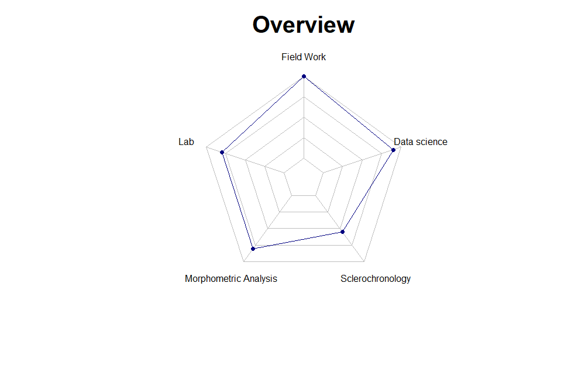

Practical Skills

Field Work

Over the years of my education and professional career, I have done field work ranging from field trips to danish estuary and beaches to collecting zooplankton and water sampling along the Greenland coast and culminating in large surveys both in the North Sea and the Barents Sea. Additionally, I have also spent 4 months in Fiji and Thailand doing underwater surveys as a volunteer, where the aim was to help with assessment of commercially and ecosystem important fish populations and top predators, mainly Bull and Hammerhead sharks. However, not all my outdoor work has been in marine waters, since I have also done field trips to scandinavian lakes and streams. Feel free to browser some of the pictures, and watch the video of Arctic Charr spawning ground in Takvatn northern Norway.
Data Science
During my education I was taught statistical analysis, including multivariate analysis, basic GIS, and basic use of the R open software statistical program. I have hence continued to improve my skills in data analysis, and my knowledge of R to such an extrent I have developed R packages for both NAFO and IMR. These packages are mainly for in-house quality control of reported catch data from fishing vessels and age estimation by IMR age readers. In my spare time I’m expanding my programming skills by learning python and machine learning to be able to apply that in future projects.
Sclerochronology
Text
Morphometric Analysis
Text
Lab